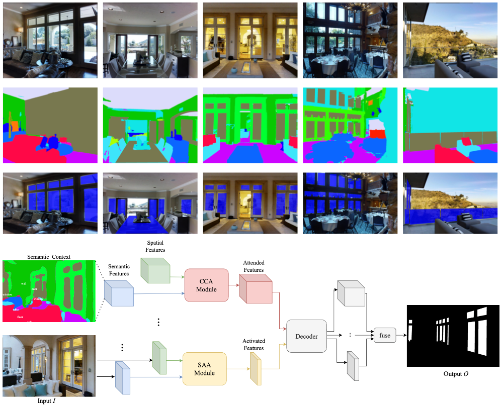

|
Yuen-Hei Yeung I'm a first year Master's student in Computer Science at NYU Courant, working with Prof. Mengye Ren. My research interests include representation learning and embodied intelligence. Previously, I completed Bachelor’s degree in Computer Science at the City University of Hong Kong, where I was fortunate to be advised by Prof. Rynson Lau and Dr. Jiaying Lin. |

|
Research |
|
Leveraging RGB-D Data with Cross-Modal Context Mining for Glass Surface Detection
Jiaying Lin*, Yuen-Hei Yeung*, Rynson Lau AAAI 2025 project / paper / code / dataset |
|
|
An explainable language model for antibody specificity prediction using curated influenza hemagglutinin antibodies
Yiquan Wang, Huibin Lv, Qiwen Teo, Ruipeng Lei, Akshita Gopal, Wenhao Ouyang, Yuen-Hei Yeung*, Timothy Tan Danbi Choi, Ivana Shen, Xin Chen, Claire Graham Nicholas Wu Immunity 2024 paper / code / dataset |
|
|  |
Exploiting Semantic Relations for Glass Surface Detection
Jiaying Lin*, Yuen-Hei Yeung*, Rynson Lau NeurIPS 2022 project / paper / code / dataset |
|
Last updated Feb 25 2025 Credit to Jon Barron |